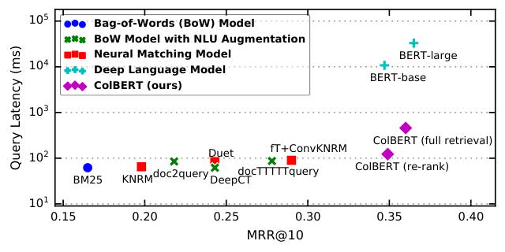
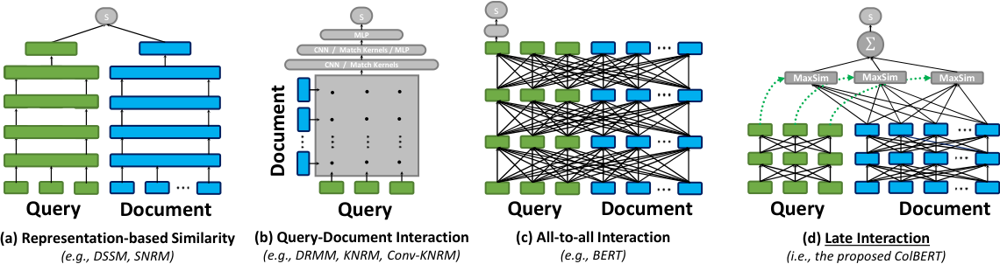
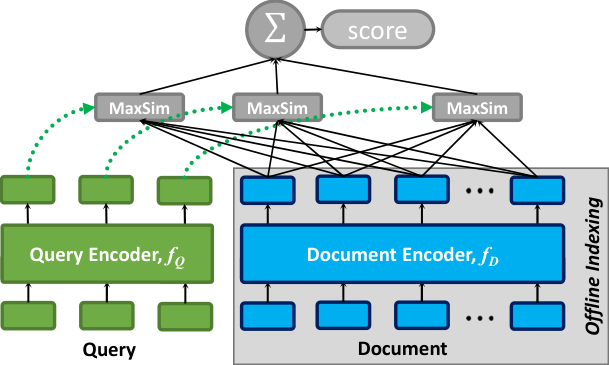
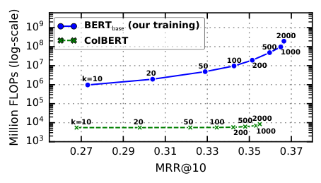
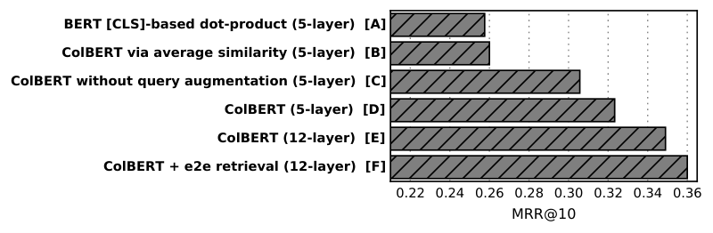

篇首导读
BERT 做检索效果好，但太贵：每个“问题–文档”对都要过一遍 12 层 Transformer，一篇文档一个分数。MS MARCO 上 BERTbase 重排序 1000 篇文档要 10.7 秒、97 TFLOPs；BERTlarge 要 32.9 秒、340 TFLOPs。这在搜索场景里不可接受。
ColBERT 的答案是延迟交互（late interaction）：问题和文档各自独立过 BERT，得到两组 token 级向量；然后用一个极便宜的 MaxSim 算子计算相关性——对每个查询 token，取它和所有文档 token 的最大余弦相似度，再求和。文档向量可以离线算好、建索引；查询只过一次 BERT。结果：效果与 BERTbase 相当（MRR@10 34.9 vs 34.7），速度快 170 倍，FLOPs 少 13,900 倍；还能直接在全库上做端到端检索，MRR@10 反而升到 36.0。
怎么读：先看第 1 节的三种匹配范式（图 2），理解“表示型 / 交互型 / 全交互 / 延迟交互”的区别；再读 3.1–3.3 的 MaxSim 与编码器；最后用 Table 1–4 和消融图判断代价与收益。这是理解现代多向量检索（如 ColBERTv2、PLAID）的起点。
术语卡
完整术语表 →- Late Interaction 延迟交互
- 先分别编码查询和文档，再在编码结果之间做轻量交互。兼顾交互模型的细粒度匹配与双编码器的可预计算性。
- MaxSim
- ColBERT 的核心算子：每个查询 token 与所有文档 token 取最大相似度，再对所有查询 token 求和。
- Query Augmentation 查询增强
- 把查询用 [MASK] 补齐到固定长度 Nq，让 BERT 在掩码位置生成额外的查询表示，起软性查询扩展/加权的作用。
- Re-ranking 重排序
- 先用 BM25 等廉价检索器取 top-k 候选，再用昂贵模型对这 k 篇重新打分。ColBERT 的典型部署方式。
- End-to-end Retrieval 端到端检索
- 不依赖 BM25 候选，直接从整个文档集合中检索 top-k。ColBERT 借助向量索引实现。
- MRR@10
- Mean Reciprocal Rank：第一个相关文档排名倒数的平均值，只看前 10 名。MS MARCO 的官方指标。
- IVFPQ 倒排文件 + 乘积量化
- FAISS 中的大规模向量索引：先用 k-means 把向量空间分区，再对子向量做乘积量化压缩，用近似距离快速搜索。
- FLOPs 浮点运算次数
- 衡量模型计算量的指标。ColBERT 每查询约 7B FLOPs，BERTbase 约 97T，相差约四个数量级。
- Recall@k
- 前 k 个检索结果中至少包含一个相关文档的查询比例。端到端检索关注的重点指标。
目录
摘要与引言
自然语言理解（NLU）的进展正在推动信息检索（IR）快速进步，主要得益于为文档排序微调深度语言模型。这类基于语言模型的排序模型虽然效果显著，但计算成本比此前方法高出几个数量级——尤其是每个“查询–文档”对都必须送入一个巨大的神经网络才能算出一个相关性分数。为解决这个问题，我们提出 ColBERT，一种为高效检索改造深度语言模型（特别是 BERT）的新型排序模型。
ColBERT 引入延迟交互架构：用 BERT 分别编码查询和文档，再用一个廉价但强大的交互步骤建模二者的细粒度相似度。通过延迟、但保留这种细粒度交互，ColBERT 既能利用深度语言模型的表现力，又能离线预计算文档表示，从而显著加速查询处理。除了降低传统模型召回文档的重排序成本，ColBERT 这种利于剪枝的交互机制还使其能利用向量相似度索引，直接从大规模文档集合中做端到端检索。我们在两个近期段落检索数据集上做了广泛评估：ColBERT 的效果与现有基于 BERT 的模型相当（并超过所有非 BERT 基线），同时执行速度快两个数量级，每次查询所需 FLOPs 少四个数量级。
过去几年，IR 社区提出了大量神经排序模型，包括 DRMM、KNRM、Duet 等。与依赖手工特征的排序学习方法不同，这些模型使用基于嵌入的查询和文档表示，并直接建模二者内容之间的局部交互（细粒度关系）。其中，近期出现的一类方法微调 ELMo、BERT 等深度预训练语言模型来估计相关性。通过计算查询–文档对的深度上下文化语义表示，这些语言模型有助于弥合文档与查询之间普遍存在的词汇不匹配。事实上，短短几个月内，多种基于 BERT 的排序模型就在多个检索基准上取得 SOTA，并被 Google、Bing 等用于生产环境。
然而，这些语言模型带来的显著收益伴随着计算成本的陡增。已有研究观察到，文献中的 BERT 类模型比此前模型贵 100–1000 倍。Figure 1 用 MS MARCO（约 900 万段落、100 万条 Bing 查询日志）总结了这个质量–成本权衡：BERT 把 MRR@10 相比此前最佳方法提高近 7%，但即使使用高端 GPU，延迟也增加到数万毫秒。这是很棘手的取舍，因为查询响应时间哪怕只增加 100ms，也会影响用户体验，甚至可测量地降低收入。
为缓解这个问题，近期工作开始用 NLU 技术增强 BM25 等传统检索模型。例如，doc2query 在索引前用 NLU 生成的查询扩展文档，DeepCT 用 NLU 估计的词重要性替换 BM25 的词频。这些方法确实降低了延迟，但相对 BERT 通常会明显损失精度。
为了在 IR 中调和效率与上下文化，我们提出 ColBERT——在 BERT 上做上下文化延迟交互（Contextualized Late interaction over BERT）。在延迟交互下，查询 q 和文档 d 被分别编码成两组上下文化嵌入，相关性用两组嵌入之间廉价、利于剪枝的计算来评估——也就是不需要穷举评估每个候选就能排序的快速计算。
Figure 2 对比了现有神经匹配范式与本文提出的延迟交互：
- (a) 表示型（representation-focused）：分别把 q 和 d 压成单个向量，用两个向量的一个相似度分数估计相关性。文档向量可离线预计算，但交互粒度粗。
- (b) 交互型（interaction-focused）：建模 q 与 d 之间词级、短语级关系，通常把交互矩阵送入 CNN/MLP 或核函数。效果好，但每个查询–文档对都要在线计算。
- (c) 全交互（如 BERT 交叉编码器）：同时建模 q 内部、d 内部以及 q–d 之间的交互。表达力最强，也最贵。
- (d) 延迟交互：q 和 d 各自独立编码，保留 token 级嵌入；再用 MaxSim 做轻量交互。既保留细粒度匹配，又能预计算文档表示。
这些架构之间存在张力：交互型模型（b、c）在 IR 任务上通常更强，但表示型模型通过隔离 q 与 d 的计算，可以离线预计算文档表示，大幅降低每查询计算量。本文观察到，把交互型模型的细粒度匹配与表示型模型的文档预计算结合起来是可行的，办法就是保留但审慎地延迟查询–文档交互。Figure 2(d) 正是这样的架构：每个查询嵌入通过 MaxSim 算子与所有文档嵌入交互，算子输出标量，再对查询词求和。


如 Figure 1 所示，ColBERT 能在几十到几百毫秒内服务查询。用于重排序时，它相对现有 BERT 模型有 170 倍以上加速（FLOPs 少 14,000 倍），同时比所有非 BERT 基线都更有效。ColBERT 的索引——唯一需要把文档送入 BERT 的环节——也很实用：用一台四 GPU 服务器，约 3 小时即可索引 MS MARCO 的 900 万段落，空间占用最低只需几十 GiB。消融实验表明，延迟交互、MaxSim 实现方式以及 BERT 编码器中的关键设计都对效果至关重要。
主要贡献：（1）提出延迟交互作为高效且有效的神经排序范式；（2）给出 ColBERT 模型，在延迟交互框架内使用新颖的 BERT 查询/文档编码器；（3）展示如何把 ColBERT 同时用于基于词项检索模型的重排序，以及基于向量相似度索引的全库检索；（4）在 MS MARCO 和 TREC CAR 两个近期段落检索集合上评估。
查看本节英文原文（节选）
Recent progress in Natural Language Understanding (NLU) is driving fast-paced advances in Information Retrieval (IR), largely owed to fine-tuning deep language models (LMs) for document ranking. While remarkably effective, the ranking models based on these LMs increase computational cost by orders of magnitude over prior approaches, particularly as they must feed each query–document pair through a massive neural network to compute a single relevance score. To tackle this, we present ColBERT, a novel ranking model that adapts deep LMs (in particular, BERT) for efficient retrieval.
ColBERT introduces a late interaction architecture that independently encodes the query and the document using BERT and then employs a cheap yet powerful interaction step that models their fine-grained similarity. By delaying and yet retaining this fine-granular interaction, ColBERT can leverage the expressiveness of deep LMs while simultaneously gaining the ability to pre-compute document representations offline, considerably speeding up query processing.
Under late interaction, q and d are separately encoded into two sets of contextual embeddings, and relevance is evaluated using cheap and pruning-friendly computations between both sets—that is, fast computations that enable ranking without exhaustively evaluating every possible candidate.
ColBERT can serve queries in tens or few hundreds of milliseconds. For instance, when used for re-ranking as in “ColBERT (re-rank)”, it delivers over 170× speedup (and requires 14,000× fewer FLOPs) relative to existing BERT-based models, while being more effective than every non-BERT baseline.
相关工作
神经匹配模型。过去几年 IR 研究者提出了大量排序神经架构。本文对比 KNRM（可微核池化，从交互矩阵提取匹配信号）、Duet（结合精确匹配与嵌入相似度）、ConvKNRM（学习匹配查询和文档中的 n-gram）、fastText+ConvKNRM（用子词嵌入缓解稀有词问题）。2018 年 Zamani 等人提出 SNRM，一种表示型 IR 模型：把每个查询和文档编码成稀疏高维“潜在词项”向量，从而能用传统倒排索引做快速端到端检索。SNRM 的想法很有前景，但在评估数据集上效果明显落后于 SOTA。本文在消融中用一个稠密 BERT 表示型模型与 ColBERT 对比。
IR 中的语言模型预训练。近期 NLU 工作强调先无监督预训练语言表示、再在下游任务微调。BERT 是典型例子。Nogueira 等人、MacAvaney 等人、Dai & Callan 研究了把这类语言模型用于不同排序数据集。常见做法（Figure 2c）是把查询–文档对送入 BERT，用 [CLS] 输出上的 MLP 产生相关性分数。后续 duoBERT 微调 BERT 比较一对文档的相关性，在 MS MARCO 上比单文档 BERT 高 1% MRR@10，但成本至少增加 1.4 倍。
BERT 优化。蒸馏、压缩、剪枝等方法可以缩小 BERT 的成本差距，但由于其通用性，加速幅度通常明显小于本文为 IR 重新设计的架构；更激进的优化往往以质量下降为代价。
高效的 NLU 模型。近期出现把昂贵 NLU 计算放到离线的方向，包括 doc2query 和 DeepCT。doc2query 用 seq2seq Transformer 为每篇文档生成若干合成查询来扩展文档，再用 BM25 索引检索；DeepCT 用 BERT 以上下文相关的方式产生 BM25 的词频分量；docTTTTTquery 与 doc2query 相同，只是把生成模型换成了预训练的 T5。与本文同时，Hofstätter 等人发布了 Transformer-Kernel（TK）模型，在 KNRM 基础上用 Transformer 对查询和文档做上下文化编码，再核池化。TK 在 MS MARCO 上创造了非 BERT 模型的新 SOTA，但最佳非集成 MRR@10 为 31%，ColBERT 达到 36%；而且 ColBERT 通过离线索引和 MaxSim 延迟交互更具可扩展性，支持 TK 不支持的端到端检索。
查看本节英文原文（节选）
Over the past few years, IR researchers have introduced numerous neural architectures for ranking. In this work, we compare against KNRM, Duet, ConvKNRM, and fastText+ConvKNRM.
In 2018, Zamani et al. introduced SNRM, a representation-focused IR model that encodes each query and each document as a single, sparse high-dimensional vector of “latent terms”. By producing a sparse-vector representation for each document, SNRM is able to use a traditional IR inverted index for representing documents, allowing fast end-to-end retrieval.
Recently, a direction emerged that employs expensive NLU computation offline. This includes doc2query and DeepCT. The doc2query model expands each document with a pre-defined number of synthetic queries generated by a seq2seq transformer model that is trained to generate queries given a document. DeepCT uses BERT to produce the term frequency component of BM25 in a context-aware manner.
Concurrently with our drafting of this paper, Hofstätter et al. published their Transformer-Kernel (TK) model. TK establishes a new state-of-the-art for non-BERT models on MS MARCO (Dev); however, the best non-ensemble MRR@10 it achieves is 31% while ColBERT reaches up to 36%.
ColBERT 架构
ColBERT 给出了一个简单框架，用来平衡神经 IR（尤其是 BERT 这类深度语言模型）的质量与成本。如前面所述，延迟查询–文档交互可以支持廉价的神经重排序（通过预计算），甚至支持实用的端到端神经检索（通过向量相似度搜索剪枝）。ColBERT 要解决的是：如何做到这一点，同时仍保留 SOTA 模型的效果——这些模型把大部分计算都条件在查询–文档联合对上。
虽然延迟交互框架可以用于 CNN、RNN、Transformer 等多种架构，本文聚焦双向 Transformer 编码器（BERT），因为它们效果最好、计算成本也最高。Figure 3 给出 ColBERT 的整体架构，包含三部分：（a）查询编码器 fQ；（b）文档编码器 fD；（c）延迟交互机制。给定查询 q 和文档 d，fQ 把 q 编码成固定大小的嵌入包 Eq，fD 把 d 编码成另一个嵌入包 Ed。关键在于，Eq 和 Ed 中的每个嵌入都分别基于 q 或 d 中的其他词做了上下文化。

延迟交互与 MaxSim
ColBERT 用 Eq 和 Ed 通过延迟交互计算 q 与 d 的相关性分数，定义为若干“最大相似度”（MaxSim）算子之和。具体地，对每个 v ∈ Eq，找它与 Ed 中所有向量的最大余弦相似度，再把各查询词的结果相加：
直观上，这个机制对每个查询词 tq 做一次“软搜索”——以它在查询中的上下文为条件——在文档嵌入中寻找最佳匹配，用 tq 与某个文档词 td 之间的最大相似度量化匹配强度；再对所有查询词的匹配证据求和，得到文档相关性。除了余弦，论文也评估了平方 L2 距离。
虽然用深度卷积、注意力层等可以做更复杂的匹配，但“最大相似度之和”有两个鲜明特点：第一，它极其廉价（第 4.2 节分析 FLOPs）；第二，它非常适合 top-k 检索的剪枝（第 4.3 节评估）。这使得可以用向量相似度算法跳过大量文档，而不必物化完整交互矩阵，甚至不必逐篇孤立考虑。其他廉价选择（如“平均相似度之和”而不是最大值）也可行，但很多不太适合剪枝。消融实验从经验上验证了 MaxSim 延迟交互相对替代方案的优势。
查询与文档编码器
在延迟交互之前，ColBERT 用基于 BERT 的编码器把每个查询或文档编码成嵌入包。查询编码器和文档编码器共享同一个 BERT 模型，但通过在查询前加特殊 token [Q]、文档前加 [D] 来区分两类输入序列。
查询编码器。给定文本查询 q，先用 BERT 的 WordPiece 分词成 q1…ql。在 [CLS] 之后、查询之前放 [Q]。如果查询不足预定义长度 Nq，用 BERT 的 [MASK] token 补齐（否则截断到前 Nq 个 token）。补齐后的序列送入 BERT 深层 Transformer，得到每个 token 的上下文化表示。
这种用掩码 token 补齐的做法称为查询增强（query augmentation）：它让 BERT 在掩码位置生成基于查询的嵌入，作为一种软的、可微的机制，学习用新词扩展查询，或根据重要性重新加权已有词。消融实验显示，这一操作对 ColBERT 的效果至关重要。
得到 BERT 的 token 表示后，编码器经过一个无激活函数的线性层，把嵌入维度控制为 m（通常远小于 BERT 隐藏维度）。这一步对控制文档的空间占用至关重要，也会显著影响查询执行时间——特别是把文档表示从系统内存搬到 GPU 的时间；在重排序中，收集、堆叠、传输嵌入甚至可能是最贵的一步。最后，输出嵌入做 L2 归一化，使任意两个嵌入的点积等价于余弦相似度，落在 [−1, 1]。
文档编码器。结构非常相似：把文档 d 分词为 d1…dn，前面加 [CLS] 和 [D]。与查询不同，文档不补 [MASK]。经过 BERT 和线性层后，文档编码器会过滤掉标点符号对应的嵌入（依据预定义列表），以减少每篇文档的嵌入数量——作者假设（即使上下文化后的）标点嵌入对效果并不必要。
综合起来，给定 q = q0q1…ql 和 d = d0d1…dn（# 表示 [MASK]），嵌入包按如下方式计算：
Ed := Filter( Normalize( Linear( BERT( “[D] d0 d1 … dn” ) ) ) ) (1)(2)
训练与索引
ColBERT 端到端可微。我们用 Adam 微调 BERT 编码器，并从头训练额外参数（线性层、[Q] 和 [D] 标记的嵌入）。注意，交互机制本身没有可训练参数。给定三元组 ⟨q, d+, d−
索引过程很直接：按 batch 遍历文档集合，对每个 batch 运行文档编码器 fD，把每篇文档的输出嵌入存下来。虽然索引是离线过程，论文做了几项简单优化来提升吞吐： 文档表示以 32 位或 16 位浮点存盘；之后要么直接加载用于重排序，要么进一步建成向量相似度索引用于端到端检索。 ColBERT 可以重排序另一个检索模型（通常是词项模型）的输出，也可以直接从文档集合做端到端检索。先看重排序：给定查询 q 和 k 篇候选（如 k = 1000），因为 k 较小，可以批量穷举打分。查询服务子系统把已索引的文档表示加载进内存，每篇文档表示为一个嵌入矩阵。 给定 q，计算 Eq（式 1），同时把 k 篇文档表示收集成三维张量 D。把 k 篇文档补齐到最大长度，便于批量操作，再把 D 搬到 GPU。在 GPU 上做 Eq 与 D 的批量点积（可分多个 mini-batch），得到一个三维张量——q 与每篇文档的交叉匹配矩阵集合。对每篇文档，先在文档词维度做 max-pool（即 MaxSim 的穷举实现），再在查询词维度求和，得到总分，最后按总分排序。 相对现有神经排序器（尤其是 BERT 类），这个计算非常便宜，成本主要花在收集和传输预计算嵌入上。典型 BERT 排序器要对 k 篇文档分别送入 BERT，每次输入长度为 |q| + |di|，而注意力对序列长度是二次的；ColBERT 只让 BERT 处理一条短得多的查询序列（长度 |q|）。因此 ColBERT 不仅更便宜，随 k 增长的可扩展性也好得多。 ColBERT 的延迟交互算子专为大规模集合上的端到端检索设计，主要目的是提高相对词项检索的召回。这里关注的是候选文档太多、无法逐一穷举评估的情况：从 N 篇文档（如 N = 1000 万）中直接取 top-k，k ≪ N。 做法是利用 MaxSim 的剪枝友好性。与其对某篇文档的所有嵌入做 MaxSim，不如用快速向量相似度数据结构，在全库所有文档嵌入中搜索查询嵌入的近邻。论文使用 Facebook 的 FAISS 库：离线索引结束后，维护“每个嵌入 → 原文档”的映射，把所有文档嵌入建入 FAISS。 查询时用两阶段流程： 实现上使用 IVFPQ 索引（倒排文件 + 乘积量化）：用 k-means 把嵌入空间分成 P 个单元（如 P = 2000），每个文档嵌入分配到最近单元；查询时只搜索最近的 p 个分区（如 p = 10）。为节省内存，每个嵌入切成 s 个子向量（如 s = 16），每个子向量用 1 字节表示；相似度在压缩域中计算，从而更便宜、更快。 ColBERT computes the relevance score between q and d via late interaction, which we define as a summation of maximum similarity (MaxSim) operators. In particular, we find the maximum cosine similarity of each v ∈ Eq with vectors in Ed, and combine the outputs via summation. Given a textual query q, we tokenize it into its BERT-based WordPiece tokens q1q2...ql. We prepend the token [Q] to the query. If the query has fewer than a pre-defined number of tokens Nq, we pad it with BERT’s special [mask] tokens up to length Nq. We denote the padding with masked tokens as query augmentation, a step that allows BERT to produce query-based embeddings at the positions corresponding to these masks. Given a triple ⟨q, d+, d−⟩ with query q, positive document d+ and negative document d−, ColBERT is used to produce a score for each document individually and is optimized via pairwise softmax cross-entropy loss over the computed scores of d+ and d−. Instead of applying MaxSim between one of the query embeddings and all of one document’s embeddings, we can use fast vector-similarity data structures to efficiently conduct this search between the query embedding and all document embeddings across the full collection. 与相关工作一致，实验在 MS MARCO Ranking 和 TREC Complex Answer Retrieval（TREC CAR） 上进行。两个近期数据集都提供了足以训练和评估深度神经网络的大规模训练数据。 实现使用 Python 3 和 PyTorch 1，预训练 BERT 来自 HuggingFace transformers。学习率 3×10−6，batch size 32；查询嵌入数固定 Nq = 32；嵌入维度 m = 128。MS MARCO 上从 Google 官方 BERTbase 初始化，训练 200k 次迭代。TREC CAR 上使用 Nogueira & Cho 发布的、在 TREC CAR 训练子集上重新预训练的 BERTlarge，以避免 Wikipedia 预训练造成测试集泄漏；由于微调更慢，只训练 125k 次迭代。 重排序默认每维 4 字节、余弦相似度；端到端检索使用平方 L2 距离（FAISS 的 L2 检索更快）。FAISS 索引分区数 P = 2000，每个查询嵌入搜索最近 p = 10 个分区，取 k′ = k = 1000；每个嵌入切成 s = 16 个子向量，每子向量 1 字节；第二阶段精排使用每维 16 位表示。延迟在单块 Tesla V100（32 GiB）上测量；端到端检索和索引实验使用四块 Titan V（每块 12 GiB）。 Similar to related work, we conduct our experiments on the MS MARCO Ranking and TREC Complex Answer Retrieval (TREC-CAR) datasets. Both of these recent datasets provide large training data of the scale that facilitates training and evaluating deep neural networks. MS MARCO is a dataset (and a corresponding competition) introduced by Microsoft in 2016 for reading comprehension and adapted in 2018 for retrieval. It is a collection of 8.8M passages from Web pages, which were gathered from Bing’s results to 1M real-world queries. Per the official evaluation, we use MRR@10 to measure effectiveness. TREC CAR is a synthetic dataset based on Wikipedia that consists of about 29M passages. Our evaluation is conducted on the test set used in TREC 2017 CAR, which contains 2,254 queries. We fine-tune all ColBERT models with learning rate 3×10−6 with a batch size 32. We fix the number of embeddings per query at Nq=32. We set our ColBERT embedding dimension m to be 128. 先看最典型的部署场景：对词袋检索模型取回的 top-k 结果重排序。Table 1 比较了 KNRM、Duet、fastText+ConvKNRM 等神经匹配模型，以及 BERTbase、BERTlarge；还报告了“BERTbase（本文训练）”——沿用 Nogueira & Cho 的模型和超参，但用与 ColBERT 相同的损失训练 200k 次迭代，便于直接比较。 表 1（原论文 Table 1）：MS MARCO 重排序结果。每个神经模型重排序 BM25 的官方 top-1000 结果；延迟只计重排序。加粗为 ColBERT 行。 从 KNRM（2017）到 BERT（2019），MRR@10 提升了 16 个点以上，但计算成本也单调上升，仿佛高质量排序必须依赖昂贵模型。ColBERT 打破了这个趋势：它使用 BERTbase 的延迟交互，效果不低于 Nogueira & Cho 的原始 BERTbase（34.9 vs 34.7），只略低于 BERTlarge（36.5）和本文训练的 BERTbase（36.0）；但延迟只有 61ms，比 BERTbase 快 170 倍以上，FLOPs 少 13,900 倍。ColBERT 比非 BERT 模型慢几十毫秒，主要花在收集、堆叠、传输文档嵌入到 GPU 上；查询编码与交互本身只占 13ms。  Figure 4 进一步展示质量–成本权衡：在相同模型规模（12 层 base）下，ColBERT 不仅更便宜，随排序文档数 k 增长也更好，因为它只处理一次查询。k = 10 时 BERT 的 FLOPs 约为 ColBERT 的 180 倍；k = 1000 时增至 13,900 倍；k = 2000 时达 23,000 倍。作者还表示，非正式实验显示这个差距大到可以让 ColBERT 完全在 CPU 上运行（尽管 CPU 重排序不在本文范围内）。 Table 2 考察全库检索：每个模型直接从 MS MARCO 的 880 万文档中为每条查询取 top-1000。除 MRR@10 和延迟外，还报告 Recall@50/200/1000——这些对“先在大集合上过滤”的端到端检索模型很重要。 表 2（原论文 Table 2）：MS MARCO 端到端检索结果。每个模型直接从 880 万文档中取 top-1000；DeepCT 的召回数字引自原论文。加粗为 ColBERT 端到端行。 Anserini 的 BM25 基线 MRR@10 为 18.7，延迟极低；doc2query、DeepCT、docTTTTTquery 依次带来显著提升，而延迟开销很小，因为它们最终仍依赖 BM25 检索。其中最强的 docTTTTTquery 通过微调 T5 比原始 BM25 提升 9 个点。ColBERT 端到端在 MRR@10 上超过所有这些模型；而且端到端比同一模型的重排序更好（36.0 vs 34.8），因为召回更高。Recall@k 的提升也很明显：Recall@50 达到 82.9，超过官方 BM25 的 Recall@1000（81.4），也超过除 docTTTTTquery 外所有基线的 Recall@200。 TREC CAR 的官方指标是 MAP。Table 3 的结果与 MS MARCO 一致：BM25 15.3，doc2query 18.1，DeepCT 24.6；BM25 + BERTbase 31.0，BM25 + BERTlarge 33.5；BM25 + ColBERT 31.3 MAP、44.3 MRR@10，用 base 规模达到与 BERTbase 相当、接近 BERTlarge 的效果。 表 3（原论文 Table 3）：TREC CAR 结果，官方指标 MAP。加粗为 ColBERT 行。 为理解效果来源，论文在 MS MARCO 开发集上做了消融（Figure 5）。主模型 [E]（12 层 BERT）MRR@10 为 34.9。由于训练成本高，其他消融模型都只用前 5 层 BERT，并同样训练 200k 次迭代；其中 [D] 是 5 层版主模型，作为对照。  ColBERT 用四块 GPU 约 3 小时即可索引 MS MARCO。注意，任何 BERT 类模型都至少要付出一次处理每篇文档的计算；ColBERT 每篇文档只过 BERT 一次，而现有 BERT 排序器会为每条查询在可能数百篇文档上重复类似计算。索引吞吐的优化（多 GPU、长度分桶、并行分词）见原文 Figure 6。 Table 4 展示不同嵌入维度与每维字节数下的空间占用。最省空间的设置（24 维、每维 2 字节、余弦重排序）只比最费空间的设置低约 1% MRR@10，却只需 27 GiB 表示整个 MS MARCO 集合；128 维、每维 4 字节则需 286 GiB。 表 4（原论文 Table 4）：MS MARCO 上的空间占用与开发集 MRR@10。 Table 1 reports the competition’s official metric, namely MRR@10, on the validation set (Dev) and the evaluation set (Eval). In contrast with this trend, ColBERT (which employs late interaction over BERTbase) performs no worse than the original adaptation of BERTbase for ranking and is only marginally less effective than BERTlarge. While highly competitive in effectiveness, ColBERT is orders of magnitude cheaper than BERTbase, in particular, by over 170× in latency and 13,900× in FLOPs. Shifting our attention to ColBERT’s end-to-end retrieval effectiveness, we see its major gains in MRR@10 over all of these end-to-end models. In fact, using ColBERT in the end-to-end setup is superior in terms of MRR@10 to re-ranking with the same model due to the improved recall. Model [A] uses BERT to produce a single embedding vector for the query and another for the document. As the results show, this model is considerably less effective than ColBERT, reinforcing the importance of late interaction. We test a model [B] that replaces ColBERT’s maximum similarity with average similarity. Similarly, the figure emphasizes the importance of our query augmentation mechanism: without query augmentation [C], ColBERT has a noticeably lower MRR@10. Interestingly, the most space-efficient setting, that is, re-ranking with cosine similarity with 24-dimensional vectors stored as 2-byte floats, is only 1% worse in MRR@10 than the most space-consuming one, while the former requires only 27 GiBs to represent the MS MARCO collection. 本文提出了 ColBERT，一种在深度语言模型（特别是 BERT）上使用上下文化延迟交互的高效检索排序模型。通过把查询和文档分别编码成细粒度表示，再用廉价、利于剪枝的计算交互，ColBERT 既能利用深度语言模型的表现力，又能大幅加速查询处理；这也使其能直接在大规模文档集合上做端到端神经检索。结果显示，ColBERT 比现有 BERT 模型快 170 倍以上、每查询 FLOPs 少 14,000 倍，而质量只受到极小影响，并超过所有非 BERT 基线。 In this paper, we introduced ColBERT, a novel ranking model that employs contextualized late interaction over deep LMs (in particular, BERT) for efficient retrieval. By independently encoding queries and documents into fine-grained representations that interact via cheap and pruning-friendly computations, ColBERT can leverage the expressiveness of deep LMs while greatly speeding up query processing. In addition, doing so allows using ColBERT for end-to-end neural retrieval directly from a large document collection. Our results show that ColBERT is more than 170× faster and requires 14,000× fewer FLOPs/query than existing BERT-based models, all while only minimally impacting quality and while outperforming every non-BERT baseline.
重排序
端到端检索
查看本节英文原文（节选）
实验设置
查看本节英文原文（节选）
实验结果
重排序结果
方法 MRR@10（Dev） MRR@10（Eval） 重排序延迟（ms） FLOPs/查询 BM25（官方） 16.7 16.5 — — KNRM 19.8 19.8 3 592M（0.085×） Duet 24.3 24.5 22 159B（23×） fastText+ConvKNRM 29.0 27.7 28 78B（11×） BERTbase（Nogueira & Cho） 34.7 — 10,700 97T（13,900×） BERTbase（本文训练） 36.0 — 10,700 97T（13,900×） BERTlarge（Nogueira & Cho） 36.5 35.9 32,900 340T（48,600×） ColBERT（BERTbase） 34.9 34.9 61 7B（1×） 端到端检索结果
方法 MRR@10（Dev） MRR@10（本地 Eval） 延迟（ms） R@50 R@200 R@1000 BM25（官方） 16.7 — — — — 81.4 BM25（Anserini） 18.7 19.5 62 59.2 73.8 85.7 doc2query 21.5 22.8 85 64.4 77.9 89.1 DeepCT 24.3 — 62（估计） 69 82 91 docTTTTTquery 27.7 28.4 87 75.6 86.9 94.7 ColBERTL2（重排序） 34.8 36.4 — 75.3 80.5 81.4 ColBERTL2（端到端） 36.0 36.7 458 82.9 92.3 96.8 TREC CAR
方法 MAP MRR@10 BM25（Anserini） 15.3 — doc2query 18.1 — DeepCT 24.6 33.2 BM25 + BERTbase 31.0 — BM25 + BERTlarge 33.5 — BM25 + ColBERT 31.3 44.3 消融实验
索引开销与空间占用
设置 维度 m 字节/维 空间（GiB） MRR@10 重排序，余弦 128 4 286 34.9 端到端，L2 128 2 154 36.0 重排序，L2 128 2 143 34.8 重排序，余弦 48 4 54 34.4 重排序，余弦 24 2 27 33.9 查看本节英文原文（节选）
结论
查看本节英文原文
要点回顾